Community Outreach
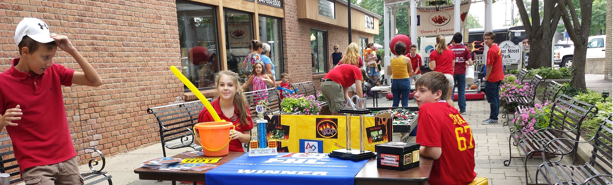
The HOT Team is very active in the community. We participate in many community service projects, conduct robotics presentations, promote science and technology in our hometowns, are very involved in FLL and work to make our community a nicer and more fun place by volunteering for clean up programs and athletic events.

Seminar
Team 67 members have begun to work with special needs students at both high schools. The team has been teaching aspects of robotics and general engineering. Students and team members use the VEX robot kit. Circuit building has been a particularly engaging activity. Through this outreach, the team has been able include students who otherwise would not have access to robotic conversations and building. This has proved to be so popular that non-special needs students have often joinied the group build sessions.
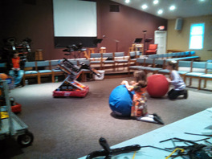
Buddy Break
Buddy Break is a community outreach program located at a local church in
White Lake. Hot team members regularly attend to special needs
children, giving parents afree afternoon. The famous “HotBot” keeps
the kids occupied and lends an arm to the lego building.
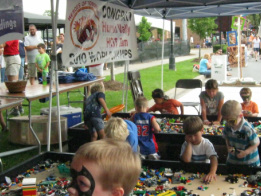
The HOT Team sets up an activity tent at Milford Memories, an outdoor festival where vendors from all over Michigan bring their tents full of merchandise to appeal to customers. The HOT team’s acitivty tent includes activity packets, face painting, a button designing table, and tables full of Legos where kids can build whatever they want, including vehicles to race down a ramp.
Our tent also includes an area where Vex robots are available to drive, as well as the chance for kids to drive CASEY, our community service robot. CASEY also has the ability to inflate balloons, which our team members then bend into animals or other objects for kids to enjoy. Also on display is the competition bot that we had built and used this year. We usually perform some demonstrations to showcase the robot’s capabilities in order to interest new members and entertain spectators.
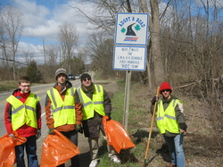
Commerce Road Clean-up
The HOT Team has adopted and maintains the hygeine of Commerce Road about four times a year to help the community. Our team rendezvous at the Sunrise Christian Fellowship Church across from the Y.M.C.A. on Commerce Road, and then walks along the road picking up trash until we reach the end of our segment at North Gardner. Generally, our team spilts up into two groups, each covering one side of the road.
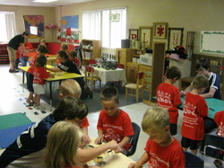
Youth Presentations
The HOT Team travels to various schools in the community to present robotic to kids, in order to foster an interest in science and technology.
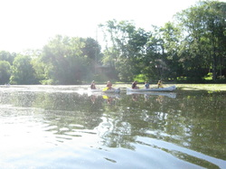
The Huron Valley River Clean Up is an annual event where participants canoe down the river while picking up trash. Participants start at either at Heavener’s Canoe Rental (for the longer voyage) or the Village Canoe Rental (for the shorter voyage). At each Rental, particiapants are given a canoe and some latex gloves and trash bags, which are then used to pick up any and all trash that is found along the way as people travel all the way down to the ending point in Milford’s Central Park.
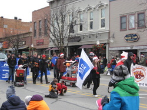
Local Parades
Everybody loves a parade. The HOT Team has participated in the
Milford 4th of July Parade, the Milford Winter Holiday Parade, the
Highland-White Lake Parade, and School Homecoming Parades. The
team showcases their recent robots and banners and CASEY the community
service robot. Children along the route are delighted by the
balloon animals they receive from CASEY.
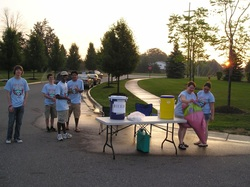
Island Lake Tri and Other Road Races
The HOT Team assists FRC Team #503, The Frog Force, in running and maintaining the Island Lake Triathalon, located in Novi.
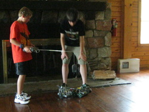
YMCA Programs
The HOT Team is involved in many programs with Milford’s local YMCA. We’ve demonstrated some of our robots for the Ohiyesa Robotics Camp, one of the YMCA’s various summer programs, and for the Hometown Heroes program, one of the YMCA’s programs for younger children. We’ve also been a part of a Child’s Safety Day, where kids recieved safety badges as we taught them about how to stay safe around various machinery.
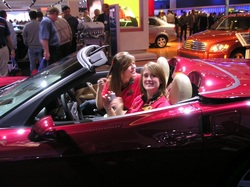
Detroit Auto Show
In the past the HOT team demonstrated our robots and tried out some HOT wheels!
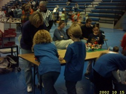
Mentoring FLL and FTC Teams
HOT team members work with local FLL teams and formed a Middle School FTC team in 2013. Our team piloted the FLL program and hosted the state championship for many years.